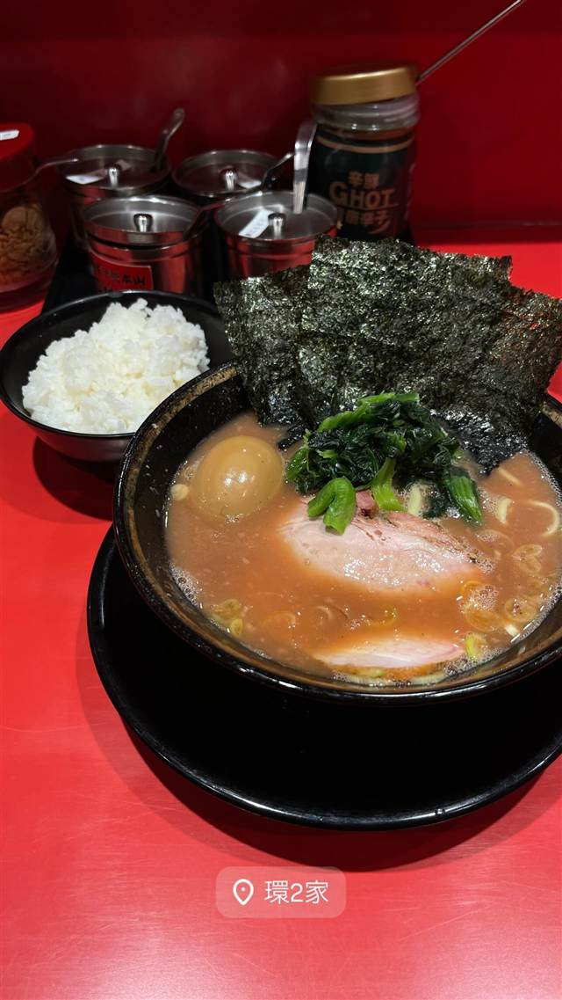

★ また行きたい家系で6位
王道家直系 IEKEI TOKYO
家系四天王「王道家」の直系、東京店だけの自家製麺
IEKEI TOKYO 王道家直系
家系ラーメンの名店「王道家」（千葉・柏）の直系店として2021年に東京・末広町で開業。本店仕込みの熟成スープと東京店だけの自家製麺を武器に、深夜まで行列が絶えない。
TRIVIA
豆知識
- 「王道家系」は家系四天王の一つに数えられる系譜
- 王道家自体は2011年に吉村家の直系から離脱し、独自に弟子を育てる道を選んだ
REVIEWS
世間の評判
96.7ラーメンDB3.62食べログ
他と違う甘みと濃厚な家系
- キレのある醤油と甘みが同時にくる独特のスープを評価する声が多い
- 無限ニンニクやライスとの相性の良さでクセになるという声がある
- 混雑時は大行列だが空いていて並ばずに入れる時間帯もあるという声がある
ラーメンデータベース 口コミ428件・総合145位・最新 2026-08
| 創業 | 2021年7月開業 |
|---|---|
| 系譜 | 千葉・柏の家系ラーメン名店「王道家」の直系店。王道家は店主・清水裕正氏が家系総本山「吉村家」で修業後、2003年1月に「吉村家直系」として創業。2011年、弟子を自ら育てるため吉村家の直系制度から離れ、独自に「王道家系」という系譜を築いた。IEKEI TOKYOはその王道家の直系として東京に進出した店舗。 |
| 看板 | 家系ラーメン |
| こだわり | 柏の本店で培った熟成スープに、東京店ではここでしか味わえない自家製麺を使用。 |
| どこから | 都心 |
| 行くなら | 行列 |
| 営業時間 | 月〜土 11:00-01:00 日 11:00-00:00 |
| 予算 | 昼 ～¥999 夜 ～¥999 |
| 場所 | 末広町駅 東京都台東区 |
| メモ | 千代田区外神田、末広町駅から徒歩約2分。定休日なし、11:00〜25:00（日曜のみ24:00閉店）で深夜まで行列ができる。 |
食べたもの：家系ラーメン
NEARBY
近い店・同じ系統の店
-
 ★
家系 本厚木駅
厚木家
家系総本山「吉村家」創業者の実子が営む直系の一杯
昼 ～¥999 夜 ～¥999
★
家系 本厚木駅
厚木家
家系総本山「吉村家」創業者の実子が営む直系の一杯
昼 ～¥999 夜 ～¥999
-
 ★
家系 白楽駅
ラーメン 末廣家
吉村家直系、吊るし焼きチャーシューが看板の家系
夜 ～¥999
★
家系 白楽駅
ラーメン 末廣家
吉村家直系、吊るし焼きチャーシューが看板の家系
夜 ～¥999
-
 ★
家系 蒲田
らーめん飛粋（HIIKI）
国産豚骨と鶏ガラを別炊きにしたマイルドな家系ラーメン
昼 ¥1,000～¥1,999 夜 ¥1,000～¥1,999
★
家系 蒲田
らーめん飛粋（HIIKI）
国産豚骨と鶏ガラを別炊きにしたマイルドな家系ラーメン
昼 ¥1,000～¥1,999 夜 ¥1,000～¥1,999
-
 ★
家系 横浜駅
家系総本山 吉村家
家系ラーメン全体の元祖・総本山で全国の家系はここから広がった
昼 ¥1,000～¥1,999 夜 ¥1,000～¥1,999
★
家系 横浜駅
家系総本山 吉村家
家系ラーメン全体の元祖・総本山で全国の家系はここから広がった
昼 ¥1,000～¥1,999 夜 ¥1,000～¥1,999
-
 ★
家系 神田
神田ラーメン わいず（神田本店）
修行先譲りの濃厚豚骨醤油スープと三河屋製麺の多加水太麺
昼 ¥1,000～¥1,999 夜 ¥1,000～¥1,999
★
家系 神田
神田ラーメン わいず（神田本店）
修行先譲りの濃厚豚骨醤油スープと三河屋製麺の多加水太麺
昼 ¥1,000～¥1,999 夜 ¥1,000～¥1,999
-

★ 家系 下永谷 環2家 昼 ～¥999 夜 ～¥999